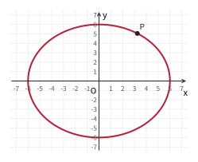
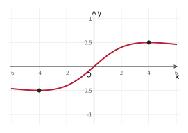
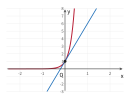
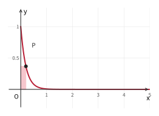

別冊章末問題の解答
1. 原点から曲線 \(y=e^{5x}\) に引いた接線の方程式を求めよ。
接点を \(t\) とおく
接点を \((t,\,e^{5t})\) とおく。
導関数を求める
\((e^{u})'=e^{u}\cdot u'\) より、
\[f'(x)=5e^{5x}\]\(x=t\) での傾きは \(f'(t)=5e^{5t}\)。
接線の方程式を書く
点 \((t,\,e^{5t})\)、傾き \(5e^{5t}\) の直線。
\[y-e^{5t}=5e^{5t}(x-t)\]原点を通る条件を使う
\((x,\ y)=(0,\ 0)\) を代入する。
\[0-e^{5t}=5e^{5t}(0-t)\]\[-e^{5t}=-5te^{5t}\]\(t\) を求める
両辺を \(-e^{5t}\)（\(\ne0\)）でわる。
\[1=5t\ \Rightarrow\ t=\dfrac{1}{5}\]傾きと接線の式
\(t=\dfrac{1}{5}\) のとき \(5t=1\) だから \(e^{5t}=e=e\)。
\[\text{傾き}=5e^{5t}=5e\]原点を通るので、
\[y=5ex\]（例題1の型）
【答案】
\[y=5ex\]答
2. 関数 \(f(x)=xe^{-5x}\) の極値を求めよ。
積の微分で導関数を求める
\((e^{-5x})'=-5e^{-5x}\)。
\[f'(x)=e^{-5x}+x\cdot(-5)e^{-5x}\]\(e^{-5x}\) でくくる。
\[=(1-5x)e^{-5x}\]\(f'(x)=0\) を解く
\(e^{-5x}>0\) だから、\(1-5x=0\)。
\[x=\dfrac{1}{5}\]増減表をかく
\(f'(x)\) の符号は \(1-5x\) の符号と同じ。
| \(x\) | \(\cdots\) | \(\dfrac{1}{5}\) | \(\cdots\) |
|---|---|---|---|
| \(f'(x)\) | \(+\) | \(0\) | \(-\) |
| \(f(x)\) | ↗ | 極大 | ↘ |
極大値を求める
\(x=\dfrac{1}{5}\) を \(f(x)\) に代入。\(-5\cdot\dfrac{1}{5}=-1\) だから、
\[f\!\left(\dfrac{1}{5}\right)=\dfrac{1}{5}\,e^{-5\cdot\dfrac{1}{5}}=\dfrac{1}{5}\,e^{-1}=\dfrac{1}{5e}\]（例題2の型）
【答案】
\[x=\dfrac{1}{5}\ \text{で極大値 }\dfrac{1}{5e}\]答
3. \(x>0\) における関数 \(f(x)=x-6\log x\) の最小値を求めよ。
導関数を求める
\((\log x)'=\dfrac1x\)。
\[f'(x)=1-6\cdot\dfrac1x=1-\dfrac{6}{x}\]通分する。
\[=\dfrac{x-6}{x}\quad(x>0)\]\(f'(x)=0\) を解く
分母 \(x\) は正なので、\(x-6=0\) より \(x=6\)。
増減表をかく
\(x>0\) なので \(f'(x)\) の符号は \(x-6\) と同じ。
| \(x\) | \(0\) | \(\cdots\) | \(6\) | \(\cdots\) |
|---|---|---|---|---|
| \(f'(x)\) | \(-\) | \(0\) | \(+\) | |
| \(f(x)\) | ↘ | 最小 | ↗ |
最小値を求める
\(x=6\) を代入する。
\[f(6)=6-6\log 6\]（例題3の型）
【答案】
\[6-6\log 6\ (x=6)\]答
4. 方程式 \(e^{x}=kx^{6}\) が \(x>0\) に異なる2つの実数解をもつような定数 \(k\) の値の範囲を求めよ。
定数を分離する
\(x>0\) で両辺を \(x^{6}\)（\(>0\)）でわる。
\[\dfrac{e^x}{x^{6}}=k\]\(g(x)=\dfrac{e^x}{x^{6}}\) とおくと、方程式は \(g(x)=k\)。解の個数は、曲線 \(y=g(x)\) と直線 \(y=k\) の共有点の個数。
\(g'(x)\) を求める
商の微分 \(\left(\dfrac fg\right)'=\dfrac{f'g-fg'}{g^2}\) で \(f=e^x,\ g=x^{6}\)。
\[g'(x)=\dfrac{e^x\cdot x^{6}-e^x\cdot6x^{5}}{(x^{6})^2}=\dfrac{e^x\,x^{5}(x-6)}{x^{12}}=\dfrac{e^x(x-6)}{x^{7}}\]増減表をかく
\(e^x>0,\ x^{7}>0\) だから、\(g'(x)\) の符号は \(x-6\) と同じ。
| \(x\) | \(0\) | \(\cdots\) | \(6\) | \(\cdots\) |
|---|---|---|---|---|
| \(g'(x)\) | \(-\) | \(0\) | \(+\) | |
| \(g(x)\) | ↘ | \(\dfrac{e^{6}}{6^{6}}\) | ↗ |
端の様子を調べる
\(x\to+0\) のとき \(e^x\to1\)、\(x^{6}\to+0\) なので \(g(x)\to+\infty\)。
\(x\to\infty\) のとき、\(e^x\) は \(x^{6}\) より速く大きくなるので \(g(x)\to+\infty\)。
共有点の個数から \(k\) の範囲を決める
グラフは \(x=6\) で最小値 \(\dfrac{e^{6}}{6^{6}}\) をとり、両端で \(+\infty\)。直線 \(y=k\) が2点で交わるのは最小値より上のとき。
\[k>\dfrac{e^{6}}{6^{6}}\]（例題4の型）
【答案】
\[k>\dfrac{e^{6}}{6^{6}}\]答
5. 曲線 \(y=e^{-4x^2}\) の変曲点の座標を求めよ。
第1導関数を求める
\((e^{u})'=e^{u}\cdot u'\)、\(u=-4x^2\) の導関数は \(-8x\)。
\[f'(x)=-8xe^{-4x^2}\]第2導関数を求める
積の微分を使う。
\[f''(x)=-8e^{-4x^2}+(-8x)\cdot(-8x)e^{-4x^2}\]\(e^{-4x^2}\) でくくる。
\[=\left(64x^2-8\right)e^{-4x^2}\]\(f''(x)=0\) を解く
\(e^{-4x^2}>0\) より \(64x^2-8=0\)。
\[x^2=\dfrac{8}{64}=\dfrac1{8}\ \Rightarrow\ x=\pm\dfrac{1}{\sqrt{8}}\]符号の変化を確認する
\(f''(x)\) の符号は \(64x^2-8\) と同じ。
| \(x\) | \(\cdots\) | \(-\dfrac1{\sqrt{8}}\) | \(\cdots\) | \(\dfrac1{\sqrt{8}}\) | \(\cdots\) |
|---|---|---|---|---|---|
| \(f''(x)\) | \(+\) | \(0\) | \(-\) | \(0\) | \(+\) |
| \(f(x)\) | 下に凸 | 変曲点 | 上に凸 | 変曲点 | 下に凸 |
\(y\) 座標を求める
\(x^2=\dfrac1{8}\) だから \(4x^2=4\cdot\dfrac1{8}=\dfrac12\)。
\[f\!\left(\pm\dfrac1{\sqrt{8}}\right)=e^{-\frac12}=\dfrac1{\sqrt e}\]（例題5の型）
【答案】
\[\left(\pm\dfrac1{\sqrt{8}},\ \dfrac1{\sqrt e}\right)\]答
6. 点 \(P\) が \(x=6\cos 2t,\ y=6\sin 2t\) にしたがって動く。時刻 \(t\) における速さと加速度の大きさを求めよ。
位置を \(t\) で微分して速度を求める
\((\cos 2t)'=-2\sin 2t\)、\((\sin 2t)'=2\cos 2t\)。
\[\vec v=\left(\dfrac{dx}{dt},\dfrac{dy}{dt}\right)=\left(-12\sin 2t,\ 12\cos 2t\right)\]
速さを求める
速さは速度ベクトルの大きさ。
\[|\vec v|=\sqrt{12^2\sin^22t+12^2\cos^22t}\]\(12^2\) でくくり、\(\sin^2\theta+\cos^2\theta=1\) を使う。
\[=\sqrt{144\left(\sin^22t+\cos^22t\right)}=\sqrt{144}=12\]速度をさらに微分して加速度を求める
\[\vec\alpha=\left(\dfrac{d^2x}{dt^2},\dfrac{d^2y}{dt^2}\right)=\left(-24\cos 2t,\ -24\sin 2t\right)\]
加速度の大きさを求める
同様に \(\sin^2+\cos^2=1\) を使う。
\[|\vec\alpha|=\sqrt{24^2\left(\cos^22t+\sin^22t\right)}=24\]（例題6の型）
【答案】
\[\text{速さ }12,\ \text{加速度の大きさ }24\]答
7. 1次近似を用いて、\(10.1^3\) の近似値を求めよ。
1次近似の公式を確認する
\(f(a+h)\fallingdotseq f(a)+f'(a)h\)（\(|h|\) が小さいとき）。
\(a,\ h\) を決める
\(10.1^3\) を \(f(a+h)\) の形に見る。\(f(x)=x^{3}\) とし、計算しやすい近くの値 \(a=10\) をとる。
\[a+h=10+\dfrac{1}{10}\ \Rightarrow\ h=\dfrac{1}{10}\]\(f(a)\) を求める
\[f(10)=1000\]\(f'(x)\) と \(f'(a)\) を求める
\[f'(x)=3 x^{2}\]\[f'(10)=300\]
公式に代入する
\[10.1^3\fallingdotseq f(10)+f'(10)\cdot h=1000+300\times\dfrac{1}{10}\]\[=1030\]
（真の値 \(1030.30100\)）。
（例題7の型）
【答案】
\[1030\]答
8. 関数 \(f(x)=\dfrac{4 x}{x^{2} + 16}\) の極値と漸近線を求め、グラフの概形をかけ。
商の微分で導関数を求める
\(f=4x,\ g=x^2+16\)。\(f'=4,\ g'=2x\)。
\[f'(x)=\dfrac{4(x^2+16)-4x\cdot2x}{(x^2+16)^2}=\dfrac{- 4 x^{2} + 64}{(x^2+16)^2}\]\(f'(x)=0\) を解く
分母は正なので、分子 \(- 4 x^{2} + 64=0\) を解く。
\[x^2=16\ \Rightarrow\ x=\pm4\]増減表をかく
\(f'(x)\) の符号は分子 \(- 4 x^{2} + 64\) の符号と同じ。
| \(x\) | \(\cdots\) | \(-4\) | \(\cdots\) | \(4\) | \(\cdots\) |
|---|---|---|---|---|---|
| \(f'(x)\) | \(-\) | \(0\) | \(+\) | \(0\) | \(-\) |
| \(f(x)\) | ↘ | \(- \dfrac{1}{2}\)（極小） | ↗ | \(\dfrac{1}{2}\)（極大） | ↘ |

極値を求める
\[f\left(4\right)=\dfrac{16}{32}=\dfrac{1}{2},\qquad f\left(-4\right)=- \dfrac{1}{2}\]
漸近線を調べる
分子・分母を \(x^2\) でわる。
\[f(x)=\dfrac{4/x}{1+16/x^2}\]\(x\to\pm\infty\) のとき \(\dfrac1x\to0,\ \dfrac1{x^2}\to0\)。
\[\lim_{x\to\pm\infty}f(x)=0=0\]漸近線は \(y=0\)。
（例題8の型）
【答案】
\[\text{極大値 }\dfrac{1}{2},\ \text{極小値 }- \dfrac{1}{2},\ \text{漸近線 }y=0\]答
9. すべての実数 \(x\) について \(e^{5x}\geqq1+5x\) が成り立つことを証明せよ。
差の関数をつくる
\(f(x)=e^{5x}-(1+5x)\) とおき、\(f(x)\geqq0\) を示す。
導関数を求める
\((e^{5x})'=5e^{5x}\)。
\[f'(x)=5e^{5x}-5=5(e^{5x}-1)\]\(f'(x)=0\) を解く
\(e^{5x}=1=e^0\) より \(5x=0\)、つまり \(x=0\)。
増減表をかく
\(e^{t}\) は \(t\) とともに増えるので、\(x<0\) では \(e^{5x}<1\)、\(x>0\) では \(e^{5x}>1\)。
| \(x\) | \(\cdots\) | \(0\) | \(\cdots\) |
|---|---|---|---|
| \(f'(x)\) | \(-\) | \(0\) | \(+\) |
| \(f(x)\) | ↘ | \(0\)（最小） | ↗ |

最小値を求める
\[f(0)=e^0-1=1-1=0\]
最小値が \(0\) なので、すべての \(x\) で \(f(x)\geqq0\)。等号は \(x=0\) のとき。
（例題9の型）
【答案】
\[\text{証明終}\]答
10. 曲線 \(y=e^{-5x}\ (x>0)\) 上の点 \(P\) から \(x\) 軸、\(y\) 軸に下ろした垂線と両軸が作る長方形の面積の最大値を求めよ。
面積を \(x\) の式で表す
\(P(x,\ e^{-5x})\)。長方形の横が \(x\)、縦が \(e^{-5x}\)。
\[S(x)=x\,e^{-5x}\ (x>0)\]
積の微分で \(S'(x)\) を求める
\((e^{-5x})'=-5e^{-5x}\)。
\[S'(x)=e^{-5x}+x\cdot(-5e^{-5x})\]\(e^{-5x}\) でくくる。
\[=(1-5x)e^{-5x}\]\(S'(x)=0\) を解く
\(e^{-5x}>0\) だから \(1-5x=0\)。
\[x=\dfrac{1}{5}\]増減表をかく
\(S'(x)\) の符号は \(1-5x\) と同じ。
| \(x\) | \(0\) | \(\cdots\) | \(\dfrac{1}{5}\) | \(\cdots\) |
|---|---|---|---|---|
| \(S'(x)\) | \(+\) | \(0\) | \(-\) | |
| \(S(x)\) | ↗ | 最大 | ↘ |
最大値を求める
\(x=\dfrac{1}{5}\) を代入。\(5x=1\) だから \(e^{-5x}=e^{-1}\)。
\[S(\dfrac{1}{5})=\dfrac{1}{5}\cdot e^{-1}=\dfrac{1}{5e}\]（例題10の型）
【答案】
\[\dfrac{1}{5e}\]答